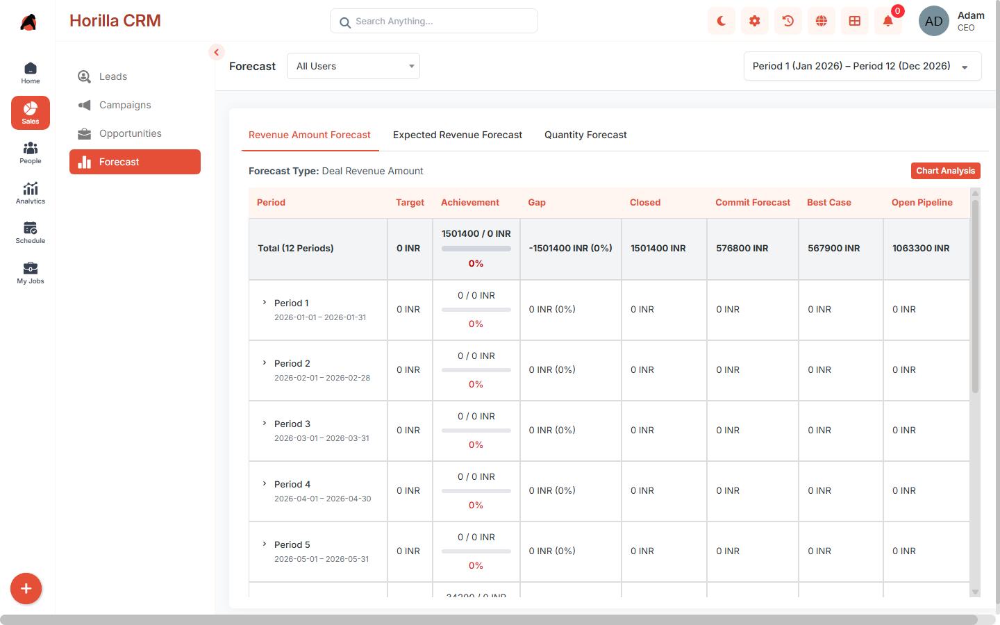
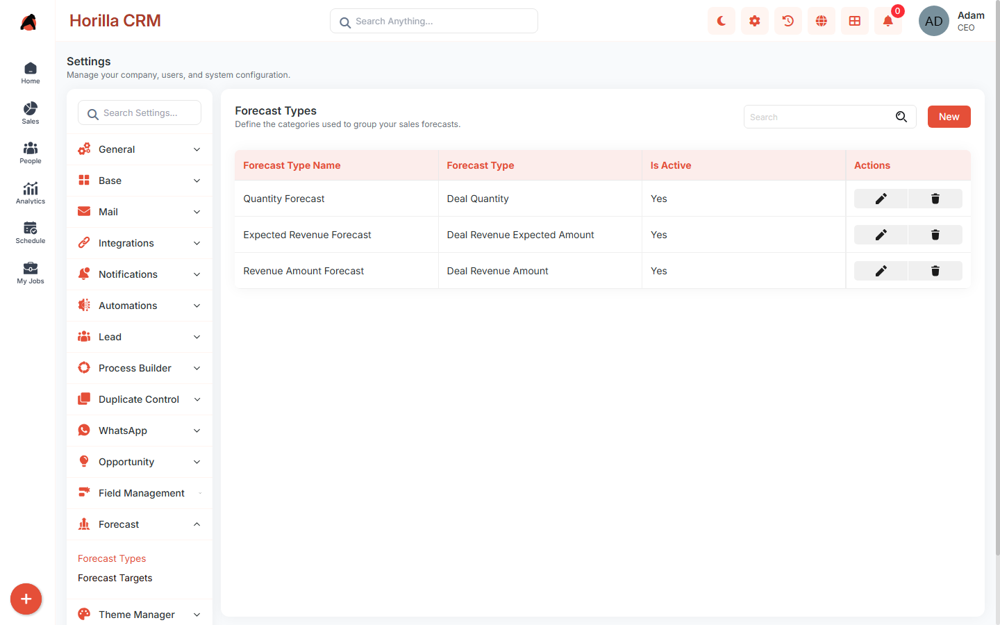
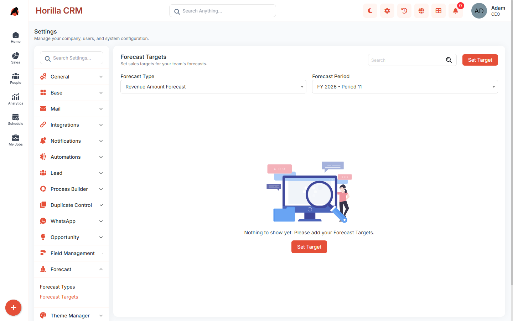

Introduction
Forecast tracks target, closed revenue, commit, best case, and open pipeline for the fiscal year. Active forecast types appear as tabs on the Forecast page. The table for the selected type loads inside that tab. Forecast Types and Forecast Targets are configured under Settings.
1. Forecast
Location: Sales → Forecast.
The page header shows Forecast, an All Users selector, and a period range. All Users includes My Forecast and the other users you can view. The period range defaults to the fiscal year, for example Period 1 (Jan 2026) through Period 12 (Dec 2026). Choose a beginning period and an ending period to narrow the table.

1.1 Forecast type tabs
Each active forecast type is a tab. The tab title is the forecast type name, such as Revenue Amount Forecast, Expected Revenue Forecast, or Quantity Forecast. Selecting a tab loads that type's table. Under the tabs, the page states the measurement for the open tab, for example Forecast Type: Deal Revenue Amount.
Chart Analysis opens a chart of the figures in the current tab, using the same user and period range.
1.2 Table inside the tab
The table belongs to the selected tab. Its columns are:
- Period
- The fiscal period, with its start and end dates.
- Target
- The target set for that period. Revenue types show an amount. Quantity types show a deal count.
- Achievement
- Closed value against the target, with a progress bar and the percentage achieved.
- Gap
- The difference between target and achievement, and that difference as a percentage.
- Closed
- Opportunities that are closed.
- Commit Forecast
- Opportunities in the commit forecast.
- Best Case
- Opportunities in the best case.
- Open Pipeline
- Opportunities still open in the pipeline.
The first row is Total for every period in the range. Each period below it can be expanded to show the period total, a row for each role, and a row for each team member. A role row can be opened to show the roles under it and the people in that role. Clicking a Closed, Commit Forecast, Best Case, or Open Pipeline value opens the opportunities that make up that figure. The same action is available on the total row, a period row, and a user row.
2. Forecast Types
Location: Settings → Forecast → Forecast Types.
This page defines the categories that become the tabs on the Forecast page. The description on the page is Define the categories used to group your sales forecasts.

The list columns are Forecast Type Name, Forecast Type, Is Active, and Actions. Forecast Type is one of:
- Deal Revenue Amount
- Deal Revenue Expected Amount
- Deal Quantity
Use the search box to find a type. Each row has edit and delete actions.
2.1 Creating a forecast type
- Click New.
- Enter Forecast Type Name, choose Forecast Type, and add a Description if you need one.
- Under Filter Opportunities, add the conditions that decide which opportunities count. Each condition has Field, Operator, Value, and Logical Operator. Click + Add More for another condition.
- Click Save.
Only an active forecast type appears as a tab on the Forecast page. If none are set, that page asks you to create one and offers Go To Forecast Type.
3. Forecast Targets
Location: Settings → Forecast → Forecast Targets.
This page sets the target amounts that the Forecast table reads. The description on the page is Set sales targets for your team's forecasts.

Two filters sit above the list:
- Forecast Type – one of the types defined on Forecast Types.
- Forecast Period – the fiscal period the targets belong to. The page opens on the current period when one is in progress.
The list shows the targets for that type and period. When none exist yet, the page says Nothing to show yet. Please add your Forecast Targets. Saved rows show the assigned user, role, and target, with edit and delete actions.
3.1 Setting a target
- Click Set Target.
-
Set Target For is one choice:
- User sets a target for one or more users.
- Role takes one total and divides it among the users in that role.
- Role Hierarchy divides that total across the selected role and the roles under it.
- For a user target, fill the user, period, forecast type, and amount. Click + Add More for another user.
- For a role target, choose the role, the period, the forecast type, and the one total.
- Click Save.
A user, period, and forecast type can be saved together only once. A duplicate combination is rejected.